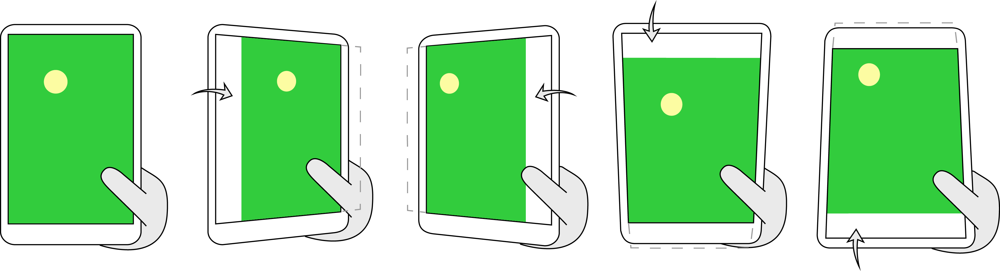
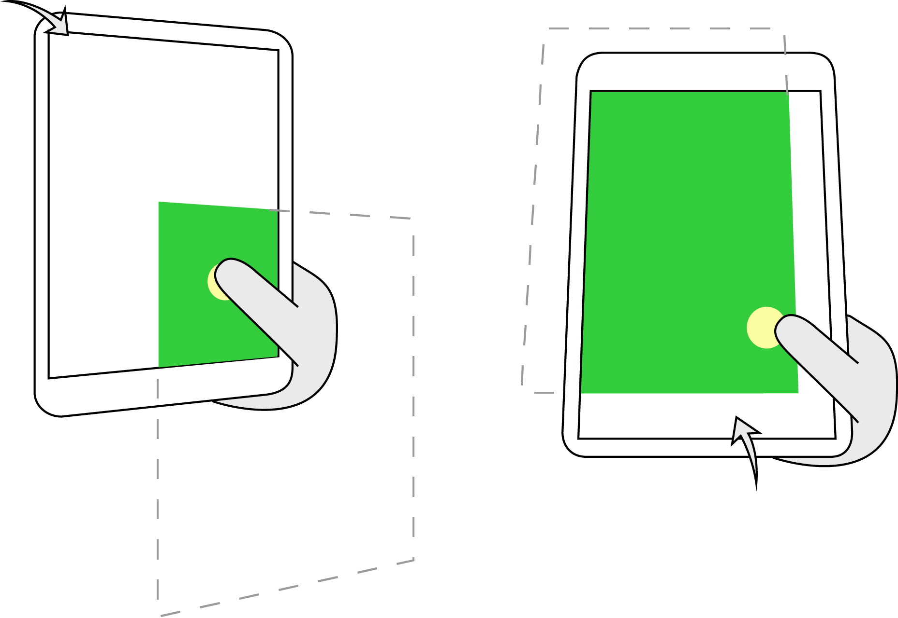
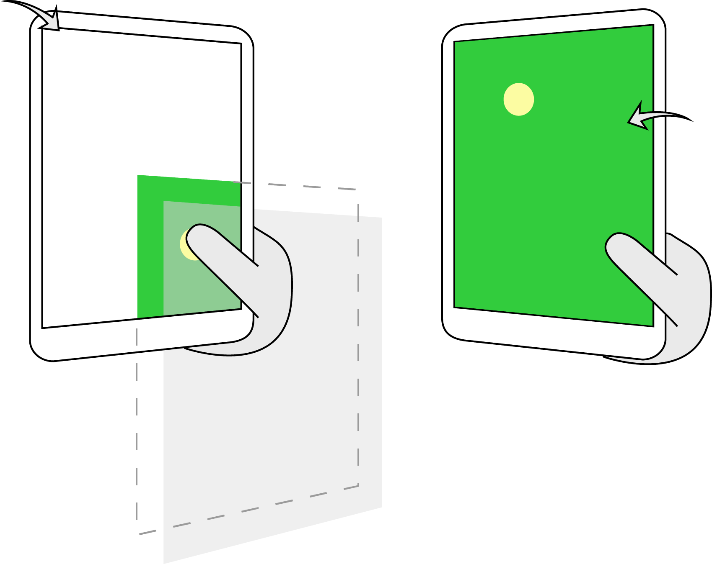

GraviTouch is an interaction technique that solves the problem of reaching far targets on touch screen mobile devices. Gravity is an analogy that represents the movement of the screen triggered by large touch, a gesture that uses a huge area of the thumb. When GraviTouch is triggered, the screen moves freely in whichever direction the angle of tilt is at. Three versions of the technique were implemented.

GraviTouch: Interaction Technique for Large-Screen Mobile Devices
Project for Fundamentals of Human-Computer Interaction (Masters 2 Level, Université Paris-Sud, 2014)
In collaboration with Alvi Syharina. The paper is available upon request.



(1) GraviTouch Free moves the screen freely in all eight directions: left, leftdown, down, rightdown, right, rightup, up, leftup.

(2) GraviTouch Predefined defines an area on the screen as the region reachable by the right thumb based on research studies [1, 2, 3, 4]. Tilting also happens in eight directions but left, leftup, and up are disabled if the right and bottom limits of the screen are reached.
(3) GraviTouch User-defined allows the user to define an area on the screen that is most comfortable to reach. Dragging the thumb diagonally from upper left to lower right defines the region.
Tools
Java, Android, Illustrator
References
- Bergstrom-Lehtovirta, J. and Oulasvirta, A. Modeling the Functional Area of the Thumb on Mobile Touchscreen Surfaces. In Proc. SIGCHI Conference on Human Factors in Computing Systems 2014. 1991-2000.
- Chang, Y., L’Yi, S., and Seo, J. Reaching Targets on Discomfort Region Using Tilting Gesture. In Proc. ACM Symposium on User Interface Software Technology, UIST’14. 115-116.
- Karlson, A.K., and Bederson, B.B. ThumbSpace: Generalized One-Handed Input for Touchscreen-Based Mobile Devices. In Proc. Interact’07. 324-339.
- Kim, S., Yu, J., and Lee, G. Interaction Techniques for Unreachable Objects on the Touchscreen. In Proc. OzCHI’12. 295-298.